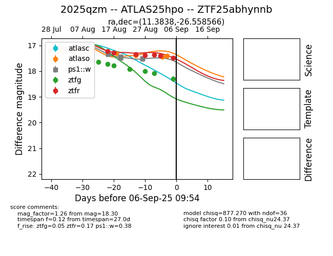

Target 2025qzm at 2025-08-28 04:40, see:
FINK: fink-portal.org/ZTF25abhynnb
Lasair: lasair-ztf.lsst.ac.uk/objects/ZTF25abhynnb
ALeRCE: alerce.online/object/ZTF25abhynnb
TNS: wis-tns.org/object/2025qzm
YSE: ziggy.ucolick.org/yse/transient_detail/2025qzm
alt names
ZTF25abhynnb (ztf,fink)
2025qzm (tns,yse)
ATLAS25hpo (atlas)
coordinates:
equatorial (ra, dec) = (11.3838,-26.55857)
galactic (l, b) = (55.9940,-88.56537)
photometry
last atlasc=17.19, atlaso=17.38, ps1::w=17.51, ztfg=18.00, ztfr=17.38
1 atlasc, 9 atlaso, 14 ps1::w, 6 ztfg, 4 ztfr detections
